At the core of SwiftUI is its three-step layout process, and understanding this process is the key to building great apps with SwiftUI.
The process is this:
It sounds so trivial, and you’re probably wondering why I’m starting out by mentioning something that is so straightforward, but the simple truth is that this simple process unlocks a huge amount of power and the more you really understand it the more you’ll be able to get SwiftUI doing exactly what you want.
The key to the power is answering a simple question: what is the “parent view” in that process? When you’re learning SwiftUI, the answer seems obvious. For example:
VStack {
Text("Hello, world!")
.frame(width: 300, height: 100)
Image(systemName: "person")
}If I asked a learner what the parent of the text view was, they would probably answer “the VStack.” And honestly that’s a perfectly fine answer, and I wouldn’t correct a beginner who said it – it feels natural, and it fits the hierarchy we can see when the code runs. However, it’s also wrong, and once you have sufficient experience with SwiftUI it’s important you understand why the answer is wrong, and more importantly what is right.
Let’s start simple: when we use any modifier in SwiftUI, we are most of the time creating a new view that wraps the original view to add some extra behavior or styling. For example, this is just one view:
Text("Hello, world!")Whereas this is two views:
Text("Hello, world!")
.frame(width: 300, height: 100)This makes sense if you break it down and keep the three-step layout process in mind: the text view can’t position itself, because that’s the job of the parent. So, the only way for “Hello, world!” to be aligned center in a 300x100 container is for the parent – the frame – to be that 300x100 container. This is also why we can stack many modifiers to create more complex effects: we aren’t modifying the original view again and again, but instead modifying a new view that modifies the original.
Once you understand this process of creating new views using modifiers, so much of the rest of SwiftUI makes sense. This is why I repeatedly encourage folks to print out the underlying types of their views, like this:
Text("Hello, world!")
.frame(width: 300, height: 100)
.onTapGesture {
print(type(of: self.body))
}When you do that, you’ll see the ModifiedContent type appear a lot – not exactly once for every modifier, because again not all modifiers create new views. ModifiedContent is itself a struct that conforms to the View protocol, and I’d like you to look it up using Open Quickly.
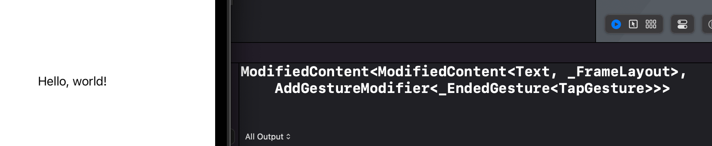
If you aren’t familiar with it, Open Quickly is an Xcode feature that lets you type to search through your code and also Apple’s own APIs; activate it using Shift+Cmd+O, then type ModifiedContent and press return. This will open Xcode’s generated interface file for SwiftUI, and you should be able to find this in there:
@frozen public struct ModifiedContent<Content, Modifier>A little further down you’ll also see its View conformance:
extension ModifiedContent : View where Content : View, Modifier : ViewModifier {These things aren’t magic, and they aren’t secret – you can use ModifiedContent directly if you want, because it’s public API. For example, back in ContentView.swift we could create a custom a modifier like this one:
struct CustomFont: ViewModifier {
func body(content: Content) -> some View {
content.font(.largeTitle)
}
}We could apply that to some text using ModifiedContent, like so:
struct ContentView: View {
var body: some View {
ModifiedContent(content: Text("Hello"), modifier: CustomFont())
}
}That’s obviously a lot more wordy than the normal SwiftUI code we’d write, but what I want you to understand is that the end result is identical to what we’d get by using modifier() like this:
Text("Hello")
.modifier(CustomFont())
.onTapGesture {
print(type(of: self.body))
}This is what SwiftUI’s result builder does for us: it repeatedly transforms our modifiers into ModifiedContent views, nesting them again and again to get exactly the right result. This is all done at compile time rather than run time: the actual underlying type of these two views are identical, rather than just the finished, rendering layouts.
So, when we write code like this:
Text("Hello, world!")
.frame(width: 300, height: 100)That creates the original text view, plus a new ModifiedContent around it that happens to contain the fixed frame instructions. The text still has its original frame – the original size it wants to work with – but now we’ve added a second frame around it.
You can see the original frame is alive and kicking by passing in a custom alignment for the outer frame:
Text("Hello, world!")
.frame(width: 300, height: 100, alignment: .bottomTrailing)If you think about it, the only way the text can be aligned to the bottom trailing edge is if it knows its original frame. So, our text view has its own default frame that exactly matches the natural size for its text, and no amount of futzing from us can ever force that text to extend its bounds beyond the natural width and height of its lines.
However, by applying the frame() modifier we’re creating a new ModifiedContent view around the text that takes up more space – it’s not strictly a “frame” view in its own right, but I think it’s helpful to talk about it like that.
SwiftUI uses a wide range of size inputs to determine the actual, final size for each one of its views.
Let’s look at this simple code again:
Text("Hello, world!")
.frame(width: 300, height: 100)Like I said, despite attaching a frame() modifier, no amount of futzing from us can ever force that text to extend its bounds beyond the natural width and height of its lines – that’s just not how SwiftUI works.
Of course, the real question here is this: what is the natural size for the text? Well, the answer is that text likes to live on one long line, and that’s exactly what it will do unless you ask for something else. For example, we might say that our frame had a width of only 30 rather than 300, like this:
Text("Hello, world!")
.frame(width: 30, height: 100)Now there isn’t enough space for the text, it’s forced to wrap across several lines to fit into the tiny box we’ve allocated to it.
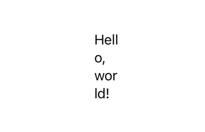
On the surface this sounds like it breaks the second rule of SwiftUI’s layout system: “the child chooses its own size and the parent view must respect that choice.” In this case the child is the text view and the “frame” view is its parent, so how come the text is being forced to accept the size of its parent, the frame?
What’s really happening here is that all views use six values to decide how much space they want to use for layouts, and understanding how they interact is key to getting the most out of SwiftUI’s layout system.
The six are:
It’s that last one that stores the natural size for our text: the text has ideal width and height suitable to store its characters on one single line, but it has no minimum size – it doesn’t care if we try to squeeze the text into a limited width, because it will automatically wrap its letters around to multiple lines.
This is where the fixedSize() modifier comes in, which has the job of promoting a view’s ideal size to be its minimum and maximum size. It’s used like this:
Text("Hello, world!")
.fixedSize()
.frame(width: 30, height: 100)When that code runs, our text will appear at its original width, despite us trying to override it. Take a moment to think about it: what do you think is actually happening internally with that code?
Tip: I know it’s really tempting to skip ahead and read my discussion for this question, but I promise you’ll learn more if you just pause for a moment and think of your own answer to the question: how will SwiftUI interpret that code, and in what order? Remember, the fixedSize() modifier create a parent view around the text, then in turn the frame() modifier creates parent view around the fixedSize().
Still here?
Okay, what we end up with is this:
ModifiedContent views and a Text view. fixedSize() child.fixedSize() proposes that same size to its Text view.fixedSize() modifier then uses that same information, except now it turns the ideal size into a fixed size – it effectively returns the equivalent of self.frame(width: text.idealWidth, height: text.idealHeight).So, fixedSize() is how we promote ideal size up to be fixed size. You can use fixedSize() with no parameters to get both axes fixed at the same time, or provide Boolean parameters to fix one specific axis if you prefer.
In the case of text views, remember that fixing its horizontal size will default to it going over one line no matter how long its text is. If that’s what you want, great! If not, you might find that fixing only its vertical axis is more useful, because it allows the text to be squashed horizontally while still growing as tall as needed to handle its lines wrapping.
But what will other view types do? Consider code like this:
Image("singapore")
.frame(width: 300, height: 100)On its surface that appears to request a 300x100 image, but any SwiftUI veteran will know it doesn’t work like that – the image will be its original size, happily overflow the 300x100 frame we allocated for it. If you’re using Xcode’s preview canvas in selection mode you’ll be able to see the thin outline of the frame right there.
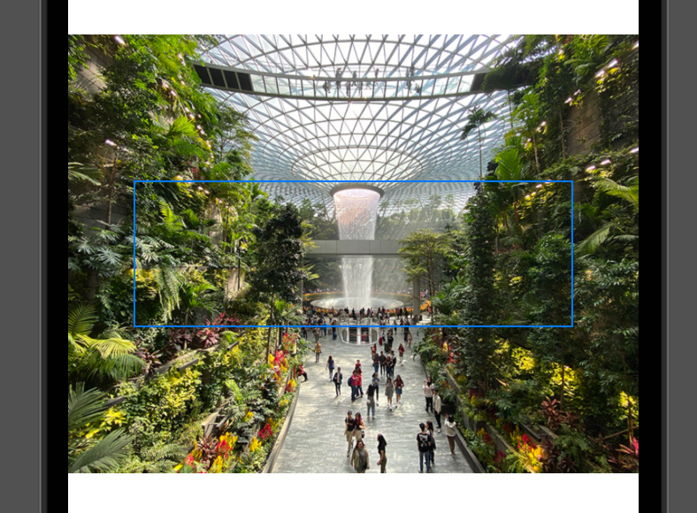
You can see it more clearly if you use the clipped() modifier to see what’s really happening:
Image("singapore")
.frame(width: 300, height: 100)
.clipped()Perhaps now you have a better idea of what’s happening here: image views get their ideal width and height directly from the image data you load into them, and just like text views no amount of futzing from us can override that.
“But Paul,” I hear you say, “surely we can override the ideal size by making the image resizable?” Nope! Again, no amount of futzing from us can override the ideal size of an image – you can see it for yourself with code like this:
Image("singapore")
.resizable()
.fixedSize()
.frame(width: 300, height: 100)That makes the image resizable, but then promotes the ideal size into a fixed size – lo and behold, the image is back to its original size again.
Earlier I said, “when we use any modifier in SwiftUI, we are most of the time creating a new view that wraps the original view to add some extra behavior or styling.”
Well, resizable() is one of the modifiers that doesn’t create a new view: it sends back an image with the resizing behavior in place, but that isn’t wrapped in some kind of “resizable” modifier – all we did was tell it to have a flexible width and height, but the underlying ideal size is still there.
The key here is to remember that whatever frame you try to apply to the image will automatically inherit values from the image that you don’t specifically override.
For example, a common problem SwiftUI learners hit is when they use a very wide image alongside some text, like this:
VStack(alignment: .leading) {
Image("wide-image")
Text("Hello, World! This is a layout test.")
}If that image is very large compared to the device you’re using, e.g. 2000x1000, then it will stretch the width of the VStack beyond the edges of the screen, which will cause the text to be placed off screen too. This is rarely what you want – how would you go about fixing it?
To fix this without squashing the image, the simplest thing to do is wrap it in a frame with a completely flexible width, like this:
VStack(alignment: .leading) {
Image("wide-image")
.frame(minWidth: 0, maxWidth: .infinity)
Text("Hello, World! This is a layout test.")
}Critically, if you remove the minWidth parameter there, the frame will get its minimum width from the image, which again wants to show its entire picture at its natural size. And even with both minimum and maximum width provided, adding fixedSize() afterwards shows that the ideal width and height of the image is still there!
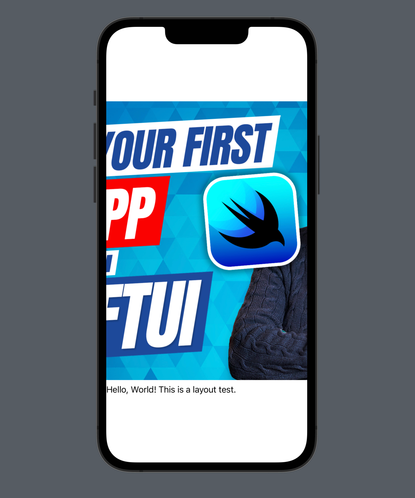
Another common problem beginners face is making two views the same width or height depending on their content. For example, they might have a layout like this:
HStack {
Text("Forecast")
.padding()
.background(.yellow)
Text("The rain in Spain falls mainly on the Spaniards")
.padding()
.background(.cyan)
}In that layout, the HStack proposes the available space to its children, then splits up the space based on what they sent back. In practice, the larger text view will need significantly more space than the smaller one, and when space is restricted the text will wrap – how can we make them the same size?
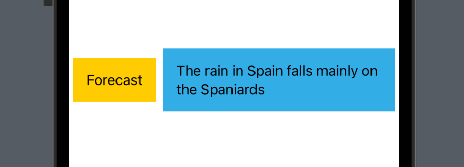
Well, the background() modifiers will create frames using whatever size they receive from the text they wrap, but if we add a custom frame to them then the backgrounds become free to expand to fill more space:
HStack {
Text("Forecast")
.padding()
.frame(maxHeight: .infinity)
.background(.yellow)
Text("The rain in Spain falls mainly on the Spaniards")
.padding()
.frame(maxHeight: .infinity)
.background(.cyan)
}Now, remember: even though we’ve told the background it has a flexible maximum height, we haven’t overridden its ideal height – that still comes through from the text it contains. So, each piece of text has its own ideal height that exactly fits its content, the background inherits that ideal height, and the HStack around it calculates its own ideal height to be the maximum of the ideal heights of the two views it contains. As the text views have infinite maximum heights and will therefore expand to fill all the available height, the HStack will also expand to fill all the available height.
As a result, if we make the HStack use fixedSize(), we can make our two text views have the same height with very little code:
HStack {
Text("Forecast")
.padding()
.frame(maxHeight: .infinity)
.background(.yellow)
Text("The rain in Spain falls mainly on the Spaniards")
.padding()
.frame(maxHeight: .infinity)
.background(.cyan)
}
.fixedSize(horizontal: false, vertical: true)Telling the HStack to fix its size is different from telling each of the text views to fix their size: we want them to resize upwards to some upper limit, which in this case is the ideal size of their container.
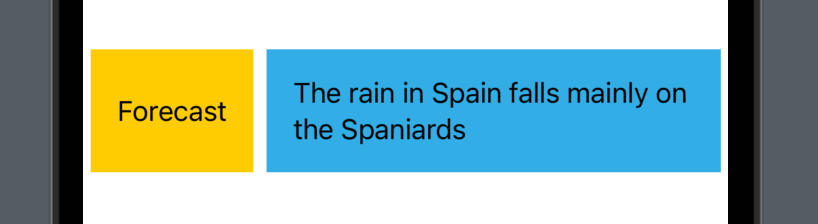
In their documentation, Apple describes fixedSize() as “the creation of a counter proposal to the view size proposed to a view by its parent,” which is quite apt once you understand what’s happening internally.
Not all views have a meaningful ideal size, and in fact some views have very little sizing preference at all – they will happily adapt their own size based on the way we use them alongside other views. This is called being layout neutral, and a view can be layout neutral for any combination of its six dimensions.
In its purest form, layout neutrality it looks like this:
struct ContentView: View {
var body: some View {
Color.red
}
}That will fill the whole space with red, because the color will occupy whatever space is available. On the other hand, we could use the color as a background:
Text("Hello, World!")
.background(.red)Because the color doesn’t actually care how much space it takes up, it will simply read the ideal and maximum sizes from its child, the text, and use that for itself. It doesn’t read the minimum size because like I said earlier the text view is itself layout neutral for its minimum width and height – the text doesn’t mind being squeezed smaller, so the background color doesn’t mind either.
If we wanted to describe this behavior accurately, we’d say that the background color has an ideal width, ideal height, maximum width, and maximum height, but is layout neutral for its minimum width and minimum height. In practice this means it will fit snugly around the text it wraps rather than expanding to fill all the available space, but it’s also happy to be squeezed downwards if needed.
Now take a look at this code:
struct ContentView: View {
var body: some View {
Text("Hello, World!")
.frame(idealWidth: 300, idealHeight: 200)
.background(.red)
}
}What do you think that might do, and why? Remember to work backwards – the layout starts with background(.red) as the parent, and works inwards from there.
Take a moment to pause and think about it before continuing.
If you break it down, the flow works like this:
Color.red is completely layout neutral so it’s happy to occupy whatever is available. If this were the entirety of our layout, the color would expand to fill the screen.frame(), which is layout neutral for minimum width, minimum height, maximum width, and maximum height. So, it really is important to think about all six sizing values when working with layout – they combine together in really interesting ways that may not necessarily make sense at first, but if you break it all down into a sort of blow-by-blow conversation then hopefully the exact behavior will become clear.
Helpfully, all six of these sizing values are optional, which means you can switch between layout neutrality and a fixed value by using either a number or nil. This is most commonly done using a ternary conditional operator, like this:
struct ContentView: View {
@State private var usesFixedSize = false
var body: some View {
VStack {
Text("Hello, World!")
.frame(width: usesFixedSize ? 300 : nil)
.background(.red)
Toggle("Fixed sizes", isOn: $usesFixedSize.animation())
}
}
} What that code does at runtime depends on the value of usesFixedSize:
VStack – it effectively does nothing at all.So, if nil forces a view to be layout neutral for one particular dimension, what happens if we have a view that’s layout neutral for every dimension? We can certainly do this with the frame() modifier, but at some point every view has some kind of size data, even if that’s just a nominal ideal size in order to keep our layouts from exploding.
To see an example of what I mean, try code like this:
ScrollView {
Color.red
}What size can the scroll view propose to Color.red?
Usually Color.red is happy to fill all the available space, but it wouldn’t make any sense here because it would lead to an infinitely sized scroll view. In this situation, the red color will get a nominal 10-point height – enough that we can see it’s being placed, but it won’t expand beyond that.
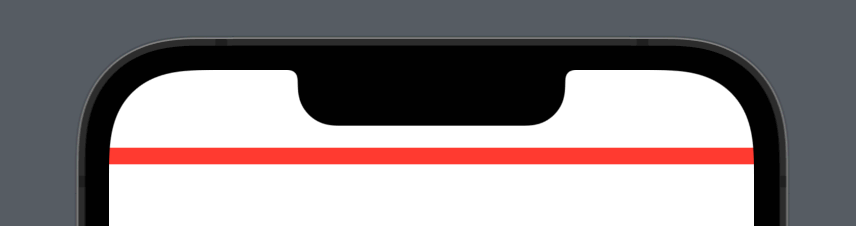
You can get a better idea of what’s happening if you try attaching a frame to the color, like this:
ScrollView {
Color.red
.frame(minWidth: nil, idealWidth: nil, maxWidth: nil, minHeight: nil, idealHeight: nil, maxHeight: 400)
}
}We’re now explicitly giving the color a maximum height to work with, but it won’t matter – it will still stay 10 points high, because our frame is layout neutral for its ideal height. This isn’t just that the color remains small while the frame grows empty around it, which you can see if you try coloring the frame blue:
ScrollView {
Color.red
.frame(minWidth: nil, idealWidth: nil, maxWidth: nil, minHeight: nil, idealHeight: nil, maxHeight: 400)
.background(.blue)
}
}You won’t see any background there, because the frame still has an ideal height matching the color it contains. In order to get the color to expand, we need to override its ideal height in its frame parent, like this:
ScrollView {
Color.red
.frame(minWidth: nil, idealWidth: nil, maxWidth: nil, minHeight: nil, idealHeight: 400, maxHeight: 400)
}
}Now the red color will expand to be 400 points high – internally the color has an infinite maximum height but gets capped to the 400 points it is offered by the frame, but now the frame won’t adopt the 10-point ideal height of the color and will instead use 400 points so that the color can grow freely.
Many SwiftUI modifiers can be stacked to create interesting effects, such as perhaps adding multiple backgrounds to some text.
So, we could add two frames and two background colors to some text, like this:
Text("Hello, World!")
.frame(width: 200, height: 200)
.background(.blue)
.frame(width: 300, height: 300)
.background(.red)
.foregroundColor(.white)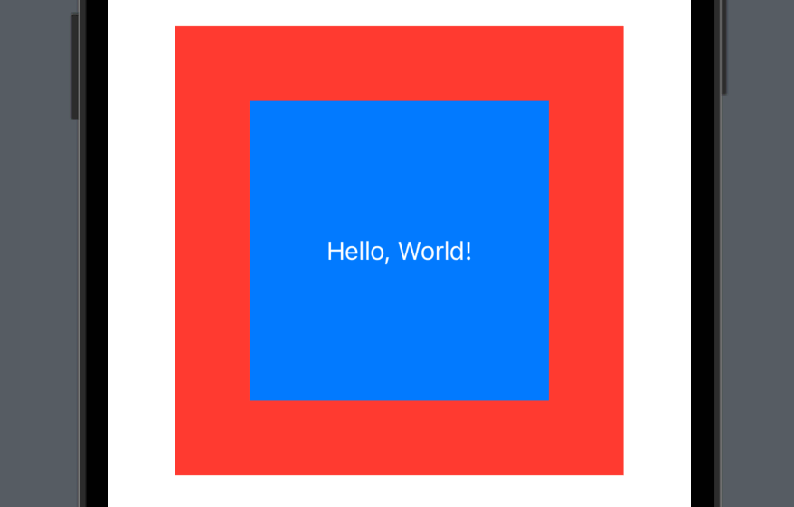
However, it’s possible and indeed common to apply a frame() modifier twice back to back – with no other modifiers in between. This is because SwiftUI separates the concepts of fixed frames and flexible frames: a single view can have a fixed width or height, or it can have flexible dimensions provided, but it can’t have both.
Of course, often we do want both. For example, if you were designing a macOS app you might say want a fixed width for part of your UI, but have a minimum height so that users can’t make the window really tiny:
Text("Hello, World!")
.frame(width: 250)
.frame(minHeight: 400)I don’t want to sound like a broken record, but remember the golden rule here: no amount of futzing from us can ever force that text to extend its bounds beyond the natural width and height of its lines. We aren’t making the text flexible at all, because it isn’t possible. Instead, we’re wrapping it in a new view that has a fixed width of 250 points, then wrapping that in another new view that has a flexible height of at least 400 points.
The best way to check your understanding is correct is to look at code like this:
Text("Hello, World!")
.frame(width: 250)
.frame(minWidth: 400)What do you think that will do when run? It sounds like we’re giving SwiftUI completely contradictory instructions, but we really aren’t, and hopefully the answer becomes clear if you try to think like SwiftUI does.
Again, pause for a moment and think it through to decide for yourself before I walk you through what actually happens.
Still here? Okay:
So, there is no contradiction at all, and if you try adding background colors after the text and each frame you’ll see exactly what’s happening:
Text("Hello, World!")
.background(.blue)
.frame(width: 250)
.background(.red)
.frame(minWidth: 400)
.background(.yellow)You’ve seen how using modifiers with a single view gets transformed by @ViewBuilder into nested ModifiedContent views, but the other side of this coin is how Swift handles multiple views.
Try this:
VStack {
Text("Hello")
Text("World")
}
.onTapGesture {
print(type(of: self.body))
}When that runs, you’ll see the type is ModifiedContent<VStack<TupleView<(Text, Text)>>, AddGestureModifier<_EndedGesture<TapGesture>>>, but really the important part in all that is TupleView<(Text, Text)> because that’s how SwiftUI encodes multiple views: a special view type that accepts other views inside it.
TupleView isn’t underscored, which means it’s public API, and I encourage folks to look it up using Open Quickly because it explains one of the key restrictions in SwiftUI. If you look for where TupleView is used, sooner or later you’ll find this:
public static func buildBlock<C0, C1, C2, C3, C4, C5, C6, C7, C8, C9>(_ c0: C0, _ c1: C1, _ c2: C2, _ c3: C3, _ c4: C4, _ c5: C5, _ c6: C6, _ c7: C7, _ c8: C8, _ c9: C9) -> TupleView<(C0, C1, C2, C3, C4, C5, C6, C7, C8, C9)> where C0 : View, C1 : View, C2 : View, C3 : View, C4 : View, C5 : View, C6 : View, C7 : View, C8 : View, C9 : ViewThat’s a generic result builder method that accepts 10 views, and you’ll also find alternatives that accept 9 views, 8 views, and so on – but, critically, you won’t find one that accepts 11 views, which is why SwiftUI isn’t able to statically represent more than 10 views in its type system. (If you look for other examples of buildBlock you’ll see there are some examples that are significantly more complex – see TableColumnBuilder for a real eye opener!)
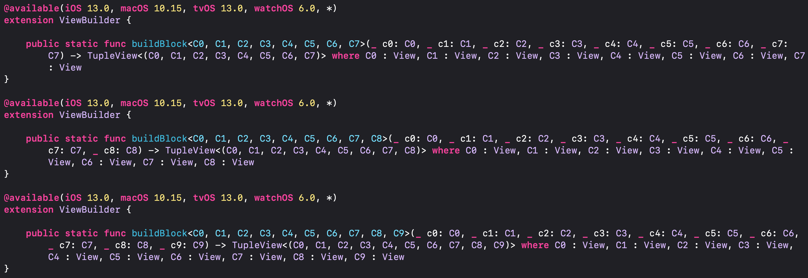
There’s no software restriction making 10 a hard limit, instead it’s a pragmatic choice by the SwiftUI team: they need to draw a limit somewhere, and 10 is a reasonable amount. If you wanted, you could use Open Quickly to look for buildBlock in SwiftUI’s generated interface, then copy it into your own code and add to it to allow 11 views, like this:
extension ViewBuilder {
public static func buildBlock<C0, C1, C2, C3, C4, C5, C6, C7, C8, C9, C10>(_ c0: C0, _ c1: C1, _ c2: C2, _ c3: C3, _ c4: C4, _ c5: C5, _ c6: C6, _ c7: C7, _ c8: C8, _ c9: C9, _ c10: C10) -> TupleView<(C0, C1, C2, C3, C4, C5, C6, C7, C8, C9, C10)> where C0 : View, C1 : View, C2 : View, C3 : View, C4 : View, C5 : View, C6 : View, C7 : View, C8 : View, C9 : View, C10 : View {
TupleView((c0, c1, c2, c3, c4, c5, c6, c7, c8, c9, c10))
}
}That uses 11 different views, so now you’ll find you can include 11 children inside any container. Heck, you could even just create a TupleView directly whenever you needed using as many views as you want, like this:
TupleView((
Text("1"),
Text("2"),
Text("3"),
Text("4"),
Text("5"),
Text("6"),
Text("7"),
Text("8"),
Text("9"),
Text("10"),
Text("11"),
Text("12"),
Text("13"),
Text("14"),
Text("15")
))Tip: Note the double opening and closing parentheses – the first is because we’re calling the TupleView initializer, and the second is to mark a tuple of our views, which is why we need to use commas to separate each view.
This isn’t magic, or a hack – it’s exactly what SwiftUI does internally, albeit now extended to go one higher than the SwiftUI team chose. In fact, you can see all this for yourself because all these TupleView instances are directly inlined into our code at build time for maximum efficiency using SwiftUI’s public interface file.
I mentioned this in the introduction to the book, but I’d like you to open it now. Run this command:
xed /Applications/Xcode.app/Contents/Developer/Platforms/iPhoneSimulator.platform/Developer/SDKs/iPhoneSimulator.sdk/System/Library/Frameworks/SwiftUI.framework/Modules/SwiftUI.swiftmodule/x86_64-apple-ios-simulator.swiftinterface
(If you hit the error about CommandLineTools, see the book introduction for how to fix it!)
If you look for extension SwiftUI.ViewBuilder { in the file that gets opened, you’ll see all the TupleView creation, like this:
extension SwiftUI.ViewBuilder {
@_alwaysEmitIntoClient public static func buildBlock<C0, C1>(_ c0: C0, _ c1: C1) -> SwiftUI.TupleView<(C0, C1)> where C0 : SwiftUI.View, C1 : SwiftUI.View {
return .init((c0, c1))
}
}That’s literally doing the same thing we did, except it can use the shorthand .init(()) rather than TupleView(()) because Swift can see the return type of the method.
SwiftUI doesn’t care how your TupleView instances are structured, meaning that you can place a TupleView inside a TupleView inside another TupleView and it will still get flattened down to a single collection of views. This means we can use Swift’s partial block results builders to allow any number of view children – try adding this:
extension ViewBuilder {
static func buildPartialBlock<Content>(first content: Content) -> Content where Content: View {
content
}
static func buildPartialBlock<C0, C1>(accumulated: C0, next: C1) -> TupleView<(C0, C1)> where C0: View, C1: View {
TupleView((accumulated, next))
}
}Just having those two partial block builders will cause SwiftUI to nest many TupleView instances, but that’s okay – it really doesn’t care how the views are structured, because internally it uses runtime reflection that inspects the type metadata to figure out exactly how many children existed. If you desperately wanted to get the exact same TupleView layout as SwiftUI has by default, while also permanently removing the 10-view limit, you would need to add a bunch more buildPartialBlock() methods to handle the full set of C0 through C9 views.
Every view in SwiftUI must be uniquely identifiable, by which I mean that SwiftUI needs to know exactly which view is located where at all times. This means all views have an identity: something about it that makes the view unique.
In SwiftUI these identities come in two forms:
Regardless, all views must have an identity: SwiftUI will provide these as much as possible, but there are two key places where we use explicit identity:
Understanding why identity is so important actual boils down into what might be the single biggest misunderstanding about SwiftUI: “when you make a change in your view hierarchy, SwiftUI performs tree diffing to figure out what changed.” Tree diffing would effectively mean Swift looking at the state of your view hierarchy before your change, and looking at it after the change, then walking through each to figure out what was added and removed.
Previously I said that learners often think the parent of a view is whatever directly contains it – a text view’s parent might be a VStack, for example – and that it’s okay to take this approach while you’re learning. I think this is a similar situation: tree diffing feels natural when you’re learning because you can imagine exactly how it happens at runtime, and so I think it’s a perfectly fine answer that helps folks make progress.
However, in practice tree diffing never happens thanks to the concept of identity: as it builds your view code, the Swift compiler has complete oversight into every subview you’re using, alongside every modifier, every condition, every loop, and more, and these all get encoded directly into the type of your views. We saw this earlier when using type(of: self.body) to examine what the actual type of our view body was, but it’s really important you understand this extends to logic as well.
Try this, for example:
VStack {
if Bool.random() {
Text("Hello")
} else {
Text("Goodbye")
}
}
.onTapGesture {
print(type(of: self.body))
}When that runs and you tap the text you’ll see it prints the following into Xcode’s console: ModifiedContent<VStack<_ConditionalContent<Text, Text>>, AddGestureModifier<_EndedGesture<TapGesture>>>. If we break that down, you can see:
ModifiedContent view that contains a VStack as its view and an AddGestureModifier as its modifier.VStack is a _ConditionalContent view, which contains two Text views.That second part is what’s important here: the _ConditionalContent view, which is underscored because it’s considered a private implementation detail rather than something we should attempt to manipulate directly, is literally our if statement encoded into Swift’s type system.
Like I said, _ConditionalContent is not exposed as public API, but we can at least see where it’s being made – use Open Quickly (Shift+Cmd+O) to look for “buildEither”, and you should find this in the SwiftUI generated interface:
public static func buildEither<TrueContent, FalseContent>(first: TrueContent) -> _ConditionalContent<TrueContent, FalseContent> where TrueContent : View, FalseContent : ViewSo, that handles any kind of view for the true case, and any kind of view for the false case. When our condition changes – which it might whenever the body property is reinvoked, because it’s random – SwiftUI doesn’t need to do any view diffing because it just flips from the TrueContent view to the FalseContent view.
It even does this when handling switch statements, which it collapses down into a binary tree of all possible states. Try this to see what I mean:
enum ViewState {
case a, b, c, d, e, f
}
struct ContentView: View {
@State var loadState = ViewState.a
@ViewBuilder var state: some View {
switch loadState {
case .a:
Text("a")
case .b:
Image(systemName: "plus")
case .c:
Circle()
case .d:
Rectangle()
case .e:
Capsule()
case .f:
RoundedRectangle(cornerRadius: 25)
}
}
var body: some View {
Button("Press") {
print(type(of: state))
}
}
}I’ve wrapped the various states up in a separate property to make the type easier to read, but when you press the button you’ll see the type is _ConditionalContent<_ConditionalContent<_ConditionalContent<Text, Image>, _ConditionalContent<Circle, Rectangle>>, _ConditionalContent<Capsule, RoundedRectangle>> – it’s a binary tree covering all our cases, so SwiftUI would need to jump through true, true, true to get some text, or true, true, false to load the image, and so on.
This behavior of converting logic into types has two important side effects, both of which directly affect how we use SwiftUI:
Remember, using modifiers transforms our views into nested ModifiedContent views, and using things like VStack causes SwiftUI to group multiple views into a TupleView. All these transformations create extremely long types for our views, which is where Swift’s opaque return types come in: when we write some View as the return type for our view body, it means we don’t want to explicitly have to write out the return type for our layout beyond saying “it will be some type that conforms to the View protocol,” but – importantly – we aren’t trying to hide that information from Swift.
Remember, SwiftUI needs to know exactly what is in our view hierarchy in order to be able to update its layouts efficiently, but if we had sent back a regular protocol – if we were able to return View rather than some View, for example – then we’re explicitly hiding data from Swift. Elsewhere in our code that is often what we want, usually because we want to retain some flexibility for the future, but with SwiftUI it’s a very bad idea because it wants to identify all our views based on their type and position within our view hierarchy.
This is all made possible because the View protocol contains this line of code:
@ViewBuilder var body: Self.Body { get }That explicitly marks the body property of our views as using @ViewBuilder – a result builder that converts our layout into a carefully curated collection of TupleView, ModifiedContent, _ConditionalContent, and more. I used this explicitly earlier because only body gets it automatically applied by the protocol.
So, ModifiedContent is generic over some kind of view and some kind of modifier, and TupleView is generic over all the views it contains, all so that SwiftUI has a complete overview of our layout – it can literally guarantee the contents of a VStack, for example, even when using conditions and loops to assemble it, which in turn it means all the views have clear structural identity.
Now, maybe you’re wondering why all this matters, and the answer is that the identity of our view dictates its lifetime: as soon as the identity of a view changes, either structurally or explicitly, the view is destroyed.
From a performance perspective this is pretty bad, because SwiftUI will throw away your platform views – the underlying UIView or NSView used to render your SwiftUI layout to the screen – when their matching SwiftUI lifetimes end, but more importantly it will also destroy any data your views were storing, because as far as SwiftUI is concerned you asked for your view to be destroyed.
You already saw how _ConditionalContent is generic over its true and false content types, so perhaps you can see where this is leading: whenever we flip between two views using an if condition, that causes SwiftUI to throw away its platform views and all the state we created each time.
You can see this in action with the following code:
struct ExampleView: View {
@State private var counter = 0
var body: some View {
Button("Tap Count: \(counter)") {
counter += 1
}
}
}
struct ContentView: View {
@State private var scaleUp = false
var body: some View {
VStack {
if scaleUp {
ExampleView()
.scaleEffect(2)
} else {
ExampleView()
}
Toggle("Scale Up", isOn: $scaleUp.animation())
}
.padding()
}
}That renders the same view in two slightly different ways: one scaled up to 200%, and one at its default size. The scaling happens using an animated Boolean, and ExampleView stores some state for how many times its button was tapped.
When you run that code you’ll notice two things:
Both of these happen because of that _ConditionalContent flip: SwiftUI destroys the original ExampleView along with its platform rendering, and creates a new ExampleView in its place – the fade effect happens because we’re seeing a transition, rather than an animation. As for the @State being lost, again this is because SwiftUI considers the original view to be destroyed, so it removes all its data at the same time.
We’re losing data, we’re losing smooth animations, and we’re making SwiftUI do a lot of extra work, because as far as SwiftUI is concerned these are two separate views.
This problem remains even if we removed the view modifier so all that was changing was the way ExampleView was created:
struct ExampleView: View {
@State private var counter = 0
let scale: Double
var body: some View {
Button("Tap Count: \(counter)") {
counter += 1
}
.scaleEffect(scale)
}
}
struct ContentView: View {
@State private var scaleUp = false
var body: some View {
VStack {
if scaleUp {
ExampleView(scale: 2)
} else {
ExampleView(scale: 1)
}
Toggle("Scale Up", isOn: $scaleUp.animation())
}
.padding()
}
}Where things get interesting is what happens if we add some explicit identity, like this:
var body: some View {
VStack {
if scaleUp {
ExampleView(scale: 2)
.id("Example")
} else {
ExampleView(scale: 1)
.id("Example")
}
Toggle("Scale Up", isOn: $scaleUp.animation())
}
.padding()
}You might expect that to work, because now we’re telling SwiftUI that both our ExampleView instances are the same, but no dice – we’ll still get the views being destroyed and recreated, with all the associated problems of that.
The problem isn’t having two ExampleView instances; that’s actually fine, and thanks to the id() modifier SwiftUI is able to figure out that they are the same view. The actual problem is _ConditionalContent, because as we saw earlier it explicitly stores its data as two separate views – it is hard-coded to think of its two pieces of data as being distinct, no matter what identifiers we attach to them. This means from a structural identity perspective our two views are different, no matter what explicit identifiers we give them.
Remember, _ConditionalContent exists because the View protocol explicitly marks its body property as using @ViewBuilder. If we get our code out of the body then we don’t get @ViewBuilder unless we ask for it, which means we don’t get _ConditionalContent, and that in turn means SwiftUI is able to rely on the explicit identity we provide.
We can see this for ourselves if we move our two ExampleView instances into a computed property, like this:
struct ContentView: View {
@State private var scaleUp = false
var exampleView: some View {
if scaleUp {
return ExampleView(scale: 2)
.id("Example")
} else {
return ExampleView(scale: 1)
.id("Example")
}
}
var body: some View {
VStack {
exampleView
Toggle("Scale Up", isOn: $scaleUp.animation())
}
.padding()
}
}Now SwiftUI will work as expected: it will preserve the state between both views, animate correctly, and perform efficiently. Even better, we can actually remove the id() modifier here and SwiftUI can still figure out it’s the same view.
As usual, I’m going to explain why in a moment, but first I’d like you think about it before reading my answer – how is SwiftUI able to understand the two ExampleView instances are the same now, even without an explicit id() attached, when it couldn’t before?
Still here?
The answer is that removing @ViewBuilder removes the _ConditionalContent struct entirely, which means flipping between the two view states no longer means flipping between two different “True” view and a “False” view.
Instead, because the exampleView property is used in a fixed position in our layout, SwiftUI can rely on good old structural identity to realize that the two structs should both map to the same underlying view – the property might return ExampleView(scale: 2) or ExampleView(scale: 1), but either way it’s an instance of ExampleView so SwiftUI considers them the same view.
This might sound ridiculous, or perhaps even dangerous: our code specifies two different ExampleView instances being sent back from a single property, so why should SwiftUI consider them the same? Understanding this gets to the very heart of what @State does and why it even exists.
You see, every time SwiftUI evaluates a view’s body property it creates new instances of all the view structs inside – it has to, because structs always have a unique owner, and can’t somehow be “reused” from a previous body invocation.
So, even a trivial view struct will be recreated often, which means SwiftUI regularly needs to map the old struct to the new struct – to recognize that two instances of a view struct are the same and should share the same state – so that it can preserve state correctly. When our exampleView property returns the same view type without using @ViewBuilder, it’s really no different from it having no condition at all and just returning a single view.
Of course, by ditching @ViewBuilder we’ve lost all the things that make SwiftUI natural – we have to return one specific type of view from both our condition cases, so we’re out of luck if one case wants to add a background color while the other doesn’t.
What SwiftUI really wants – and the kind of code we should really be striving for – is for us to use the ternary conditional operator, like this:
struct ContentView: View {
@State private var scaleUp = false
var body: some View {
VStack {
ExampleView(scale: scaleUp ? 2 : 1)
Toggle("Scale Up", isOn: $scaleUp.animation())
}
.padding()
}
}Using this approach we’re back to having structural identity do all the hard work for us: regardless of the value of scaleUp we have an ExampleView as the first child of our VStack, so SwiftUI will keep it alive as the Boolean changes.
I think the problem is pretty clear in our current code, but it might take a little more thought when dealing with modifiers depending on which iOS version you’re targeting. For example, we might have some code to show a message in bold if the user hasn’t read it yet:
struct ContentView: View {
@State private var isNewMessage = false
var body: some View {
if isNewMessage {
Text("Message title here").bold()
} else {
Text("Message title here")
}
}
}How could we write that as a single view? In iOS 16 and later the bold() modifier takes a Boolean saying whether it’s active or not, but if you’re targeting 15 or earlier – you either add the modifier or you don’t.
If you aren’t able to target 16 or later, the fix here is to remove bold() entirely and replace it with fontWeight(), which does accept other options:
Text("Message title here").fontWeight(isNewMessage ? .bold : .regular)We could get even simpler because fontWeight() actually accepts an optional weight, where nil means “the default”:
Text("Message title here").fontWeight(isNewMessage ? .bold : nil)Some SwiftUI modifiers simply refuse to accept a customization parameter, with the most notorious being hidden() – it unconditionally hides a view in our layout, while leaving space where it was. This means using it puts back to the state loss problem from earlier:
struct ContentView: View {
@State private var shouldHide = false
var body: some View {
VStack {
if shouldHide {
ExampleView(scale: 1)
.hidden()
} else {
ExampleView(scale: 1)
}
Button("Toggle") {
withAnimation {
shouldHide.toggle()
}
}
}
}
}Remember, the problem here is @ViewBuilder, not ExampleView – even if you tried to build an improved hidden() modifier that accepts a Boolean, you’ll fall foul if you adopt @ViewBuilder:
extension View {
@ViewBuilder func hidden(_ hidden: Bool) -> some View {
if hidden {
self.hidden()
} else {
self
}
}
}Once again the key is to use a ternary conditional operator, which means no more need for @ViewBuilder:
extension View {
func hidden(_ hidden: Bool) -> some View {
self.opacity(hidden ? 0 : 1)
}
}That preserves our view’s identity regardless of the value of hidden, which ensures the same view stays alive the entire time.
So, while it might take a little extra work sometimes, using identity properly increases performance, preserves program state, and creates better animations.
There are a handful of places where you want to intentionally discard the identity of your views – to tell SwiftUI that two instances of a view are different no matter what it might otherwise think.
For example, consider the following list that shuffles its contents when a button is tapped:
struct ContentView: View {
@State private var items = Array(1...20)
var body: some View {
VStack(spacing: 0) {
List(items, id: \.self) {
Text("Item \($0)")
}
Button("Shuffle") {
withAnimation {
items.shuffle()
}
}
.buttonStyle(.borderedProminent)
.padding(5)
}
}
}Using withAnimation() here will trigger the default iOS list animation, where each row will slide from its old position to its new position. That might be what you want, but in many places this effect is rather hard on the eye – when a single row moves this animation looks great, but when everything moves it just causes a jumble.
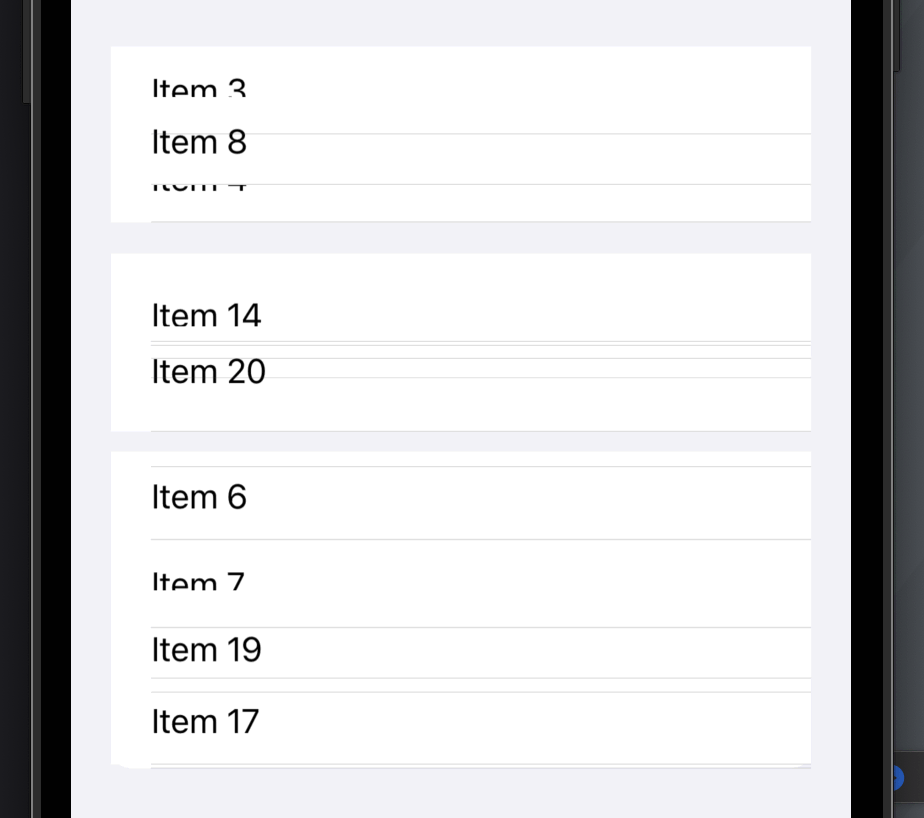
To fix this we can provide SwiftUI with an explicit identity for our list, but use a random value for that identity so that it changes every time the view is evaluated. This means SwiftUI sees the same structural location for the view but a different explicit identity, and so will consider the two lists to be different. In practice, that means it will remove one and insert the other using a default fade transition just by changing the code to this:
List(items, id: \.self) {
Text("Item \($0)")
}
.id(UUID())That immediately looks better when many rows are changing at once, but it also means we now have complete control over how the animation happens rather than being forced to use the default list reorder animation. So, we could make a 1-second ease-in-out animation like this:
Button("Shuffle") {
withAnimation(.easeInOut(duration: 1)) {
items.shuffle()
}
}Or we could add a custom transition rather than fading, like this:
List(items, id: \.self) {
Text("Item \($0)")
}
.id(UUID())
.transition(.asymmetric(insertion: .move(edge: .trailing), removal: .move(edge: .leading)))So, now we have complete control over the animation, which means you can create something less intense as the default row slide, or perhaps something just plain different like our edge transition. If you tap Shuffle quickly, you’ll even see multiple overlapping lists arrive and depart in swift succession.
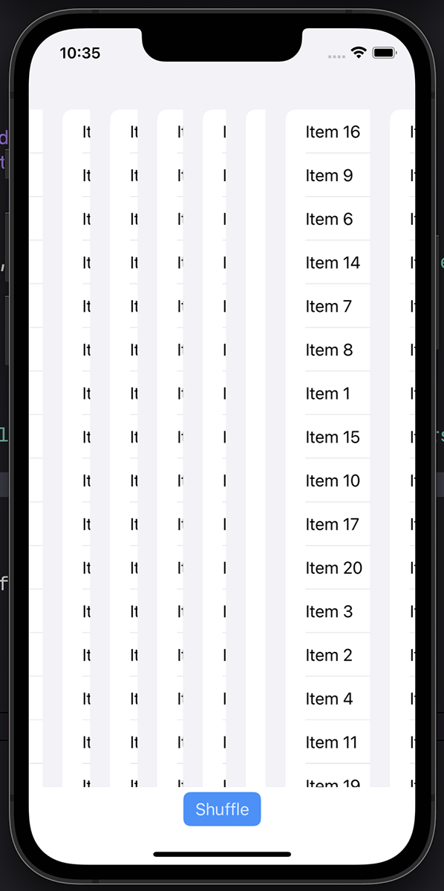
Remember, discarding identity does have the downside that SwiftUI will destroy any underlying data storage and recreate any platform views, so be careful – there is a cost to this work, particularly when dealing with more complex views such as List.
In the simplest case, this technique is useful when you want to let the user cycle through various options. For example, we could make a simple icon generator by selecting random colors and SF Symbols:
struct ContentView: View {
let colors: [Color] = [.blue, .cyan, .gray, .green, .indigo, .mint, .orange, .pink, .purple, .red]
let symbols = ["run", "archery", "basketball", "bowling", "dance", "golf", "hiking", "jumprope", "rugby", "tennis", "volleyball", "yoga"]
@State private var id = UUID()
var body: some View {
VStack {
ZStack {
Circle()
.fill(colors.randomElement()!)
.padding()
Image(systemName: "figure.\(symbols.randomElement()!)")
.font(.system(size: 144))
.foregroundColor(.white)
}
.transition(.slide)
.id(id)
Button("Change") {
withAnimation(.easeInOut(duration: 1)) {
id = UUID()
}
}
.buttonStyle(.borderedProminent)
.padding(.bottom)
}
}
}Just changing the id property to a new value is enough to pick a new random color, a new random SF Symbol, and having the changes animate in smoothly – all by explicitly discarding identity.
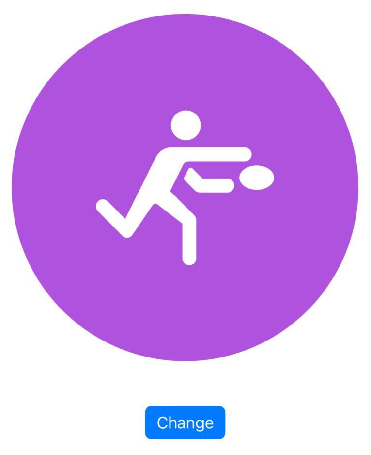
We all know that optionals are a core feature of the Swift language, but don’t underestimate the usefulness of optionals in SwiftUI – you’ll find optionals are baked right into key places for extra flexibility.
For example, if you were just to look at Xcode’s autocompletion options you would see that the background() modifier accepts any kind of View, Shape, or ShapeStyle, but it doesn’t accept optionals – you need to provide a concrete instance of one of those types.
However, SwiftUI is really smart here, and to see why I’d like you to try this code:
Text("Hello")
.background(Color.blue)
.onTapGesture {
print(type(of: self.body))
}When that runs, you’ll see it has the type _BackgroundStyleModifier<Color>.
In comparison, we could make the background optional, like this:
.background(Bool.random() ? Color.blue : nil)When that runs you’ll see the type is now _BackgroundModifier<Optional<Color>> – the background of our view is a Color?, meaning that it might be there or might not depending on the result of our random Boolean.
This is possible because Optional uses conditional conformance to become a View in its own right. To see how, use Open Quickly to bring up the generated interface for SwiftUI by searching for something like NavigationStack, then search in there for extension Optional. You’ll see that SwiftUI extends the Optional enum to conform to a range of protocols where it wraps types that conform to those protocols, like this:
extension Optional : Commands where Wrapped : Commands
extension Optional : Gesture where Wrapped : Gesture
extension Optional : View where Wrapped : ViewSo, Optional conforms to Commands where the thing inside the optional also conforms to Commands, etc.
This is what makes it possible to conditionally apply backgrounds or overlays, or to conditionally enable a gesture based on some program state – use the gesture when your state is true, or use nil otherwise to remove it.
Copyright © 2023 Paul Hudson, hackingwithswift.com.
You should follow me on Twitter.